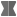
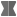

Progress Bar
Illustrates how to use timelines to create an animated progress bar.
Progress Bar animates rectangles and numbers using timelines.
Creating the Progress Bar
First, we create an empty project, as described in Creating Projects. For the purposes of this example, we call the project progressbar.
In this example, we use two overlapping instances of the preset Rectangle component and an instance of the preset Text component to create the progress bar. There is also a preset Progress Bar component available in Components > Qt Quick Controls.
In the Design mode, we drag-and-drop a Rectangle from Components > Default Components > Basic to the 2D view and modify its size to create the background for the progress bar. We change its ID to pb_back in Properties.
We want to be able to control the background rectangle and the text label that was added by the project wizard, so we will use an Item component for that. We drag-and-drop the Item from Components > Default Components > Basic to the 2D view and change its ID to root in Properties.
To make the background and text children of the Item, we drag-and-drop them to the Item in Navigator. This enables us to use the anchor buttons in Properties > Layout to anchor them to their parent. We anchor the background to its parent on all edges, with a 30-pixel margin at the top to leave space for the text. We then anchor the text to the top of the Item.
We now drag-and-drop another rectangle on top of the background rectangle in Navigator and change its ID to pb_front in Properties. We then anchor the left, top, and bottom of the indicator to its parent with 5-pixel margins. We leave the right side free because its value needs to change for the animation.
For more information about creating and positioning components, see Using Components and Scalable Layouts.
Animating Progress Bar Elements
The text label will indicate the progress in numbers and changing color, while the indicator rectangle will indicate it by getting wider and changing color. To animate the label and indicator, we'll add timelines in the Timeline view.
For more information about using the timeline, see Creating Timeline Animations.
Adding Color Animation
First, we add a color animation to the root component in the Root.qml file. We select the  button to add a 100-frame timeline to root. You can use the default values for all other fields.
button to add a 100-frame timeline to root. You can use the default values for all other fields.
To start recording a color animation on the timeline, we check that the playhead is at frame 0 and then select the  (Auto Key (K)) button (or press k).
(Auto Key (K)) button (or press k).
We then set the color at frame 0 to green (#8de98d) in Properties > Text > Text Color. We can either pick a color from the color selector or use the Set Binding command in the  (Actions) menu to open the Binding Editor.
(Actions) menu to open the Binding Editor.
We then move the playhead to frame 50 and set the text color to red (#de4f4f). Finally, we move the playhead to frame 100 and set the color to yellow (#f0c861).
When we deselect the record button to stop recording the timeline, the new timeline appears in the view.
We can drag the playhead along the timeline to see the color animation.
Animating the Indicator
We select pb_front in Navigator and then select the record button again to animate the width of the indicator. At frame 0, we set the width to 0 in Properties > Geometry - 2D > Size. We then move the playhead to 100 frames and set the width to 590.
We will now copy the color animation from the text label to the indicator. First, we right-click the text component in the Timeline view to open a context menu and select Copy All Keyframes to copy the keyframe values we specified for the text label.
Next, we select the indicator in the Navigator, and then select Insert Keyframes for Item to paste the keyframe values to the indicator.
When we move the playhead, we can see that the color animation is also applied to the indicator.
Creating a Reusable Component
We want the progress bar to be reusable, so we'll move it to a separate component file. To make sure that the component will contain the timeline, we select Filter Tree in Navigator and then deselect the Show Only Visible Items check box to show the timeline component in Navigator. We then move the timeline component to root to have it moved as a part of the root component.
Now we can right-click root to open a context menu and select Move Component into Separate File. We can see the properties that will be available from outside of the component.
Exporting Properties
We now select the root component in Navigator, and then select Go into Component in the context menu to open Root.qml in the 2D view.
We want to be able to use the keyframe value as the value of the text label, so we will export it as a property alias. We select timeline in Navigator and then Properties > Timeline > Current frame > Actions > Export Property as Alias.
When we select root in Navigator, we can see the timelineCurrentFrame property on the Bindings tab in the Connections view. Bindings. We double-click it to change its name to progress.
We will bind some JavaScript to the value of the text label to turn it into a running number that reflects the number of the keyframe on the timeline. We select the text label in Navigator and then select Properties > Text > Set Binding to open the Binding Editor. We set Math.round(root.progress) as the value of the text label.
When we move back to the top-level file, we can see that the number of the current keyframe (0) is displayed as the value of the text label.
Animating Progress Bar Instances
We want to experiment with different start and end values and easing curves, so we copy-paste the progress bar instance twice in the top-level file. We use a column layout to lay out the progress bar instances.
We can now add timelines for each progress bar instance, with different settings. We select the button to add a 4000-frame timeline to the first progress bar instance (root). We select the Continuous check box so that the animation will loop.
In Properties > Root, we can see the progress property that we can animate. If we had called the component and property something else, we would see the names we gave them here.
With the playhead in the first frame, we select the record button and give the progress property the initial value of 5. We then move the playhead to frame 2000 and give it the value of 95. We continue to the last frame and set the value back to 5 to have a smooth looping animation.
When we select the Show Live Preview button on the 2D view toolbar, we see a running number and moving progress indicator of the animated progress bar instance.
We now change the settings of the other two progress bar instances. We make one of the indicators move from right to left by starting from frame 100. When all our progress bar instances have been animated, we'll continue by specifying easing curves for them.
For more information about previewing UIs, see Validating with Target Hardware.
Specifying Easing Curves
We can add custom easing curves to every keyframe in the animations. First, we select the keyframe to add the easing curve to, and then select Edit Easing Curve in the context menu. We can select several keyframes simultaneously if we want to use the same easing curve for them.
We select the easing curve in the Easing Curve Editor.

When we apply easing curves to animations, the shape of the keyframe marker changes from  to  .
to  .
For more information, see Editing Easing Curves.
Files:
- progressbar/progressbar.pro
- progressbar/qml.qrc
- progressbar/qml/ProgressBar.qmlproject
- progressbar/qml/ProgressBar.ui.qml
- progressbar/qml/Root.qml
Images:
{kind=link}